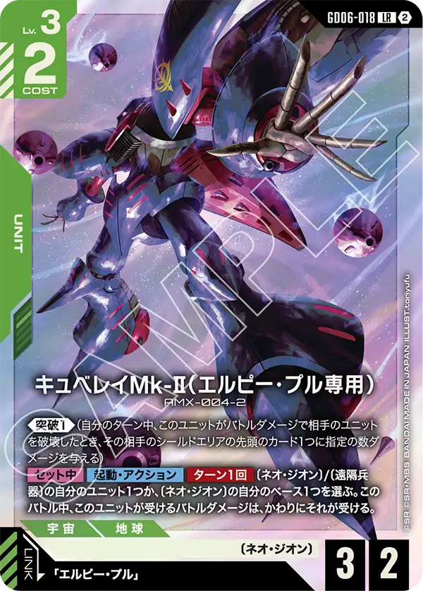
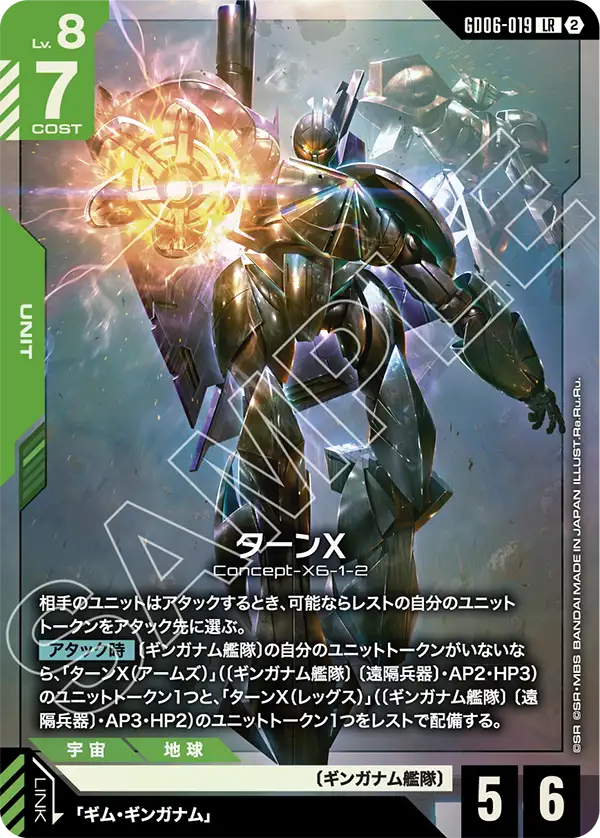
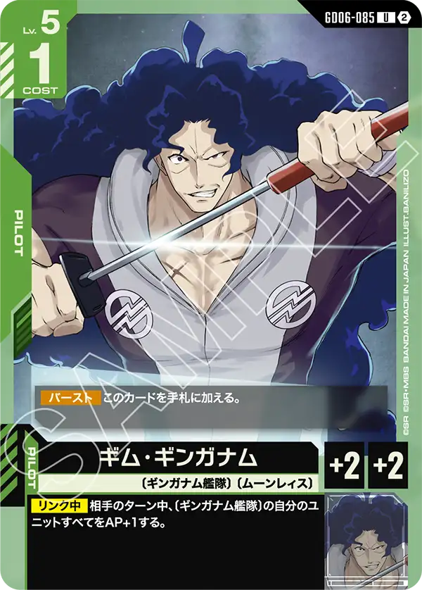

緑LRの顔ぶれ
GD06の緑LRは2枚。〔ネオ・ジオン〕のキュベレイMk-Ⅱ（エルピー・プル専用）と〔ギンガナム艦隊〕のターンX。片方はLv.3コスト2の小型、もう片方はLv.8コスト7の大型で、役目がはっきり分かれている。
緑の新しい特徴は〔ギンガナム艦隊〕（14枚のうち12枚がGD06）。〔ネオ・ジオン〕はもともと60種ある大きな特徴で、GD06で11枚が増えた（種類はパラレル版を除いて数えた）。

キュベレイMk-Ⅱ（エルピー・プル専用） GD06-018
《突破1》(自分のターン中、このユニットがバトルダメージで相手のユニットを破壊したとき、その相手のシールドエリアの先頭のカード1つに指定の数ダメージを与える) 【セット中】【起動・アクション】【ターン1回】〔ネオ・ジオン〕/〔遠隔兵器〕の自分のユニット1つか、〔ネオ・ジオン〕の自分のベース1つを選ぶ。このバトル中、このユニットが受けるバトルダメージは、かわりにそれが受ける。
小型のまま攻撃に参加し、アタックし返されたときのダメージは〔ネオ・ジオン〕か〔遠隔兵器〕の味方、または〔ネオ・ジオン〕のベースに受けさせる。コスト2で出せて《突破1》も持つので、序盤に出して最後まで盤面に残る動きができる。
エルピー・プル（GD06-084・Lv.3コスト1）は【セット時】に〔ネオ・ジオン〕/〔遠隔兵器〕の自分のユニットと同じ数だけ《突破1》を得るので、横に並べるほどシールドへのダメージが増える。〔遠隔兵器〕はGXビット（ST13-004）とユニットトークン3種（ビット/ファンネル・ターンX（アームズ）・ターンX（レッグス））が持つ特徴で、ダメージを受けさせる先にトークンを選べる。同じ名前のキュベレイMk-Ⅱ（エルピー・プル専用）にはLv.4コスト3の《突破3》（GD06-029）もある。
セット中に他のユニット、ベースを対象に自身が受けるダメージを肩代わりできる面白い1枚。
対象に取れるカードに条件があるが範囲がそれなりにあるので大きな問題にはならないだろう。
突破も持つため、ユニットへ攻撃→ダメージを肩代わりしつつ突破と言う形が取れるため、2回以上ユニットに攻撃ができれば能力相当の効果といえる。
アクションで起動ができるので相手からの攻撃も止める事ができるが、効果を過信しすぎるとベースのHPが削られすぎる場合もあるので効果を使うかどうか慎重に決めて行きたい。

ターンX GD06-019
相手のユニットはアタックするとき、可能ならレストの自分のユニットトークンをアタック先に選ぶ。 【アタック時】〔ギンガナム艦隊〕の自分のユニットトークンがいないなら、「ターンX（アームズ）」(〔ギンガナム艦隊〕 〔遠隔兵器〕・AP2・HP3)のユニットトークン1つと、「ターンX（レッグス）」(〔ギンガナム艦隊〕 〔遠隔兵器〕・AP3・HP2)のユニットトークン1つをレストで配備する。
出ている間、相手はレストの自分のユニットトークンがいればそこを狙わなければならない。囮がいない状態でアタックすると「アームズ」（AP2/HP3）と「レッグス」（AP3/HP2）の2体がレストで補充されるので、相手の攻撃は本体に届きにくい。
ギム・ギンガナム（GD06-085・Lv.5コスト1）がリンク中は、相手のターンに〔ギンガナム艦隊〕のユニットすべてをAP+1する。トークンを増やす手段は本体のほかに、ターンX（トップ）（GD06-021・【配備時】に自分のトークン1つを選んで同じものをもう1体）とコマンドの戦闘神ギンガナム（GD06-109・アームズかレッグスを1体）があり、〔ギンガナム艦隊〕12枚はトークンを並べる方向で揃っている。
おそらく多くのプレイヤーが最も注目しているカードになるだろう。
アタック先をトークンに強制できる効果を持ち、自身でもアタック時にトークンを配備できるので1枚で完結しているのが非常に魅力と言えよう。
トークンもステータスが今まで登場したトークンの中でも優秀寄りなのでその点もポイントが高い。
リンク対象のギム・ギンガナム[GD06-085]は相手ターン中に〔ギンガナム艦隊〕の自分のユニットすべてをAP+1するので相手はトークンの処理に四苦八苦するだろう。
キュベレイ[ST13-001]とも相性が良くトークンを複数出せ、効果でターンXが出したトークンを使ってバトルもできるので一旦セットでデッキに入れられるのでは無いかと予想される。
このカードを採用したデッキがどの程度戦えるかは非常に見ものである。


カードの効果文は公式カードリスト（2026年10月16日時点）から転記した。誤りに気づいたらXアカウント（@gcg_stats）のDMで教えてほしい。